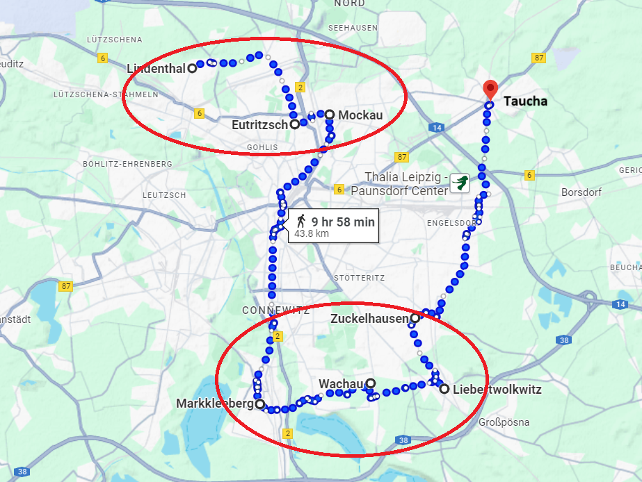
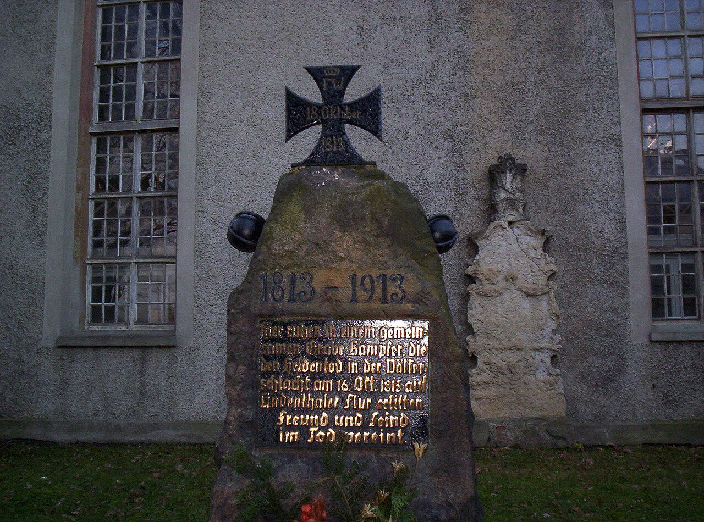
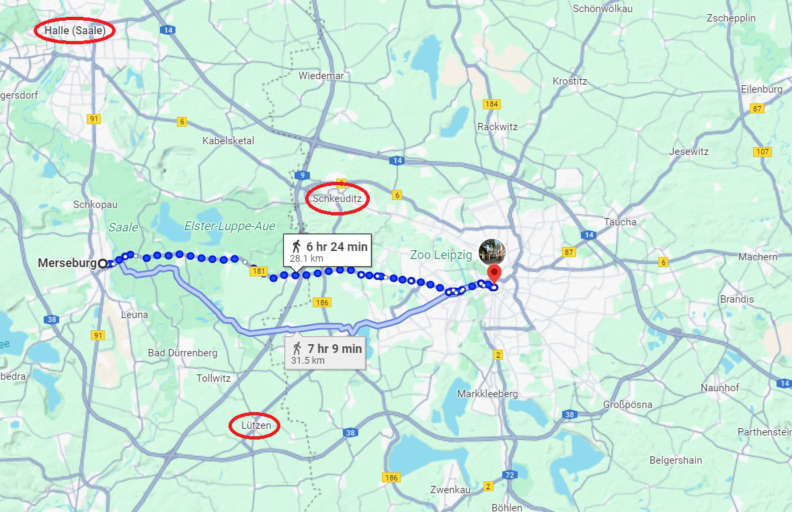
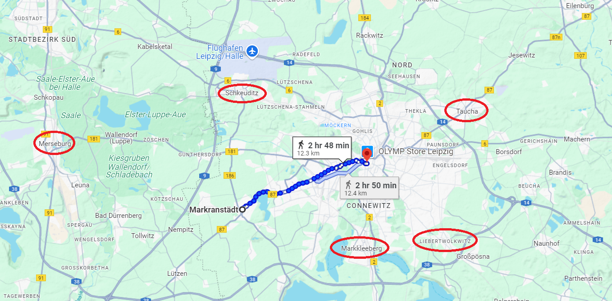
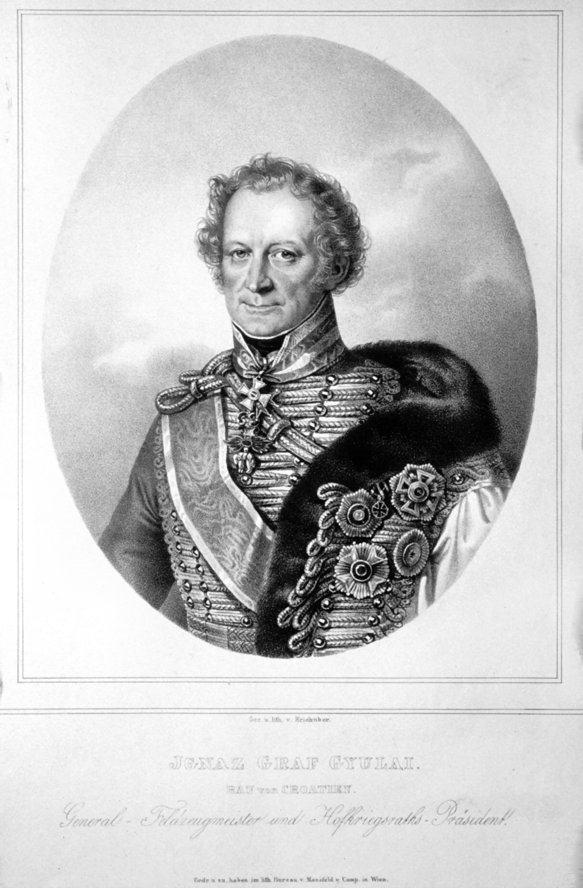

라이프치히 전투 (3) - 두 개의 전선
게시: 2025-06-09T06:30:41+09:00
나폴레옹은 10월 14일 오후와 15일 내내, 포니아토프스키와 뮈라 등을 비롯한 기존 남부 전선 지휘관들과 긴 대화를 나누며 라이프치히 남쪽에 속속 도착하는 보헤미아 방면군의 포진을 살폈습니다. 적군의 포진과 규모를 보면 다음 날인 16일에 대규모 전투가 벌어질 것이 거의 확실해 보였습니다. 나폴레옹으로서는 혹시라도 자신과 맞닥뜨린 보헤미아 방면군이 겁을 집어먹고 후퇴하지 않을까 걱정이 들기도 했고, 대체 저 전선 뒤에 어느 정도의 병력이 도착해 있는지 정확히 알지 못해 답답하기도 했습니다. 나폴레옹은 명확하게 알지 못했지만, 보헤미아 방면군은 오스트리아 제1군단 약 3만을 제외한 거의 전원, 그러니까 16만이 넘는 병력이 그날 밤중으로 다 전선에 도착할 예정이었습니다. 나폴레옹도 베니히센이 이끌고 라이프치히 쪽으로 오고 있는 폴란드 방면군의 존재를 알고 있었습니다. 그는 드레스덴에서 제14군단을 지휘하며 농성 중인 생시르로부터 약 6만의 신규 징집된 러시아군이 드레스덴 앞을 지나갔으며, 그 중 약 3만이 드레스덴 주변에 남아 자신과 대치 중이고 나머지 3만은 라이프치히 방면으로 떠났다는 보고를 받은 바 있었습니다. 나폴레옹은 이들에 대해 '군복과 장비, 훈련 측면에서 매우 형편없는 러시아 신병들이 아군에게 크게 혼쭐이 난 상태'라며 매우 가소롭다는 듯이 표현했습니다. 말은 이렇게 했지만 사실 나폴레옹이 거느린 병력 대부분도 그런 신병에 불과했으며, 더 나쁜 것은 자신의 병사들은 지치고 굶주린 상태였으므로 나폴레옹으로서는 그들이 도착하기 전에 보헤미아 방면군을 격파해야만 했습니다. 그러기 위해서는 북쪽에서 계속 내려오고 있는 그랑다르메 군단들이 당장 15일 저녁, 늦어도 16일 새벽까지는 라이프치히 인근에 도착해야 했습니다. 일단 엘베강을 건너 로슬링을 점령했던 레이니에의 제7군단 1만4천은 절대 그 시간에 맞춰 도착할 수 없었고, 15일에는 이제 겨우 바트 뒤벤에 도착하고 있는 정도였습니다. 이건 공연히 베를린을 점령한다고 설레발을 떨었던 나폴레옹이 자초한 일이었습니다. 다행히 다른 군단들은 아슬아슬하게나마 시간에 맞춰 도착할 수 있었습니다. 먼저 원래부터 라이프치히 인근에 있던 마르몽의 제6군단은 일찌감치 라이프치히 북서쪽 린덴탈(Lindenthal)에 자리를 잡고 할러 방면에서 나타날 수도 있는 베르나도트와 블뤼허에 대한 방어선을 구축했습니다. 군단 하나가 2개 방면군을 상대하는 것은 아무리 방어만 한다고 해도 말이 안 되었으므로 베르트랑의 제4군단이 그 뒤 오이트리츠쉬(Eutritzsch)에 지원을 위해 대기했고, 수암의 제3군단도 라이프치히 북쪽 마을인 모카우(Mokau)에 막 도착 중이었습니다. 나머지는 모두 라이프치히 남동쪽 전선으로 투입되었습니다. 라이프치히 정남쪽인 마클리베르크(Markkleeberg)와 될리츠(Dölitz) 일대는 포니아토프스키의 제8군단이, 바차우(Wachau)에는 빅토르의 제2군단이, 리베르트볼크비츠(Liebertwolkwitz)에는 로리스통의 제5군단이, 그리고 그 동쪽의 주켈하우젠(Zuckelhausen)에는 오쥬로가 프랑스에서 막 데려온 신병들로 구성된 제9군단이 배치되었습니다. 가장 먼 동쪽의 타우차(Taucha)에는 막도날의 제11군단이 저녁 늦게서야 도착했습니다. 기타 요소요소에 배치된 기병군단들과 로이드니츠(Reudnitz)에 예비대로 배치된 근위대 전체 병력까지 합하면 나폴레옹이 라이프치히에 깔아놓은 병력은 약 19만에 달했습니다.

(위에 언급된 라이프치히 일대의 생소한 마을 이름들을 연결한 선입니다. 실은 모카우와 마클리베르크 사이는 굳이 연결할 필요가 없습니다. 그러니까 나폴레옹의 전선은 북쪽의 린덴탈-모카우 전선과 남쪽의 마클리베르크-주켈하우젠 전선 2개로 분리된 셈입니다. 나머지, 그러니까 서쪽과 동쪽은 그냥 텅 비워져 있는데, 그래도 되나요? 나폴레옹이 왜 이렇게 했는지는 다음 번에 보시겠습니다.)

(린덴탈은 지금도 인구 7천이 안 되는 조용한 시골 마을입니다. 거기 교회에 1813년 10월 16일 싸우다 쓰러진 사람들을 위한 기념비가 저렇게 서있습니다.) 이에 비해 보헤미아 방면군은 16일에 동원 가능한 병력이 16만에 불과했습니다. 물론 블뤼허가 할러로부터 16일에 몰고 나타날 슐레지엔 방면군 4만2천이 있었으니 이를 합하면 연합군 병력은 20만이 넘었습니다. 그에 대비하여 나폴레옹도 라이프치히 북쪽에 3개 군단을 배치했으니 남쪽에 배치한 것은 약 14만에 불과했지만, 그에게는 내선이동의 결정적인 장점이 있었습니다. 보헤미아 방면군과 슐레지엔 방면군은 서로 멀리 떨어지고 사이에 나폴레옹이 버티고 있었으므로 서로 즉각적인 교신이 어려웠습니다만, 나폴레옹은 전황에 따라 언제든 북쪽의 3개 군단 중 일부 혹은 전부를 남쪽 전선에 몇 시간 안에 투입할 수 있었습니다. 나폴레옹도 바로 이 내선이동의 장점을 살리는 것에 이 전투의 승패가 달려 있다는 것을 잘 알고 있었습니다. 그런데 그렇게 내선이동의 장점을 살리려면 적의 병력 배치와 움직임을 확실하게 파악해야 했는데, 나폴레옹에겐 적에 대한 정보가 너무 부족했습니다. 나폴레옹을 가장 골치 아프게 했던 것은 역시나 베르나도트였습니다. 나폴레옹도 나름 스파이 등을 통해서 연합군 내의 지휘 체계와 분위기를 알고 있었기에, 잘러강 서쪽으로 도망친 북부 방면군과 슐레지엔 방면군의 통합 지휘권은 블뤼허가 아닌 베르나도트에게 있다고 판단하고 있었습니다. 실제로도 그랬습니다. 다만 나폴레옹이 몰랐던 것은 블뤼허는 베르나도트를 극도로 경멸하여 그의 명령에 복종하지도 않는다는 점과 함께, 대체 베르나도트가 어디에 있느냐 하는 것이었습니다. 10월 15일 오전 8시, 전장을 정찰하러 나가기 전 나폴레옹은 제11군단장 막도날에게 보내는 편지에서 이런 내용을 써보냈습니다. "들어오는 보고를 종합해보면 스웨덴 왕세자(베르나도트)는 잘러강을 건너 메르제부르크(Merseburg)까지 진출한 것 같다. 덕분에 라이프치히 북서쪽을 지키고 있는 마르몽 앞에는 몇몇 기병대 외에는 아무런 적군이 나타나지 않고 있다. 그 인간 미친 것 아닌가? 스웨덴 왕세자는 보헤미아 방면군 혼자서 나를 상대하게 내버려둔 셈인데. 정말 이해가 안 간다."

(나폴레옹의 저 편지 내용을 보면 기회가 생길 때마다 사소한 꼬투리를 잡아 베르나도트의 뒷담화를 하고 있습니다. 사실 메르제부르크에서 라이프치히까지는 하루 정도면 돌파 가능한 거리이므로, 베르나도트가 메르제부르크에 있었다면 그는 라이프치히 전투에 참전할 수 있었습니다. 그러니까 베르나도트가 보헤미아 방면군을 저버린 것이 이해가 안 간다는 나폴레옹의 말이 오히려 이해가 안 가는 비난인 셈입니다.) 당시 베르나도트의 병력 약 6만5천은 쾨텐(Köthen) 일대에서 할러를 향해 막 행군을 시작한 상태였습니다. 가령 뷜로의 프로이센 제3군단은 10월 15일 새벽 3시에 할러를 향해 행군을 시작했습니다. 즉, 아무리 강행군을 하더라도 16일 라이프치히에서 벌어지는 전투에는 절대로 참전할 수 없었습니다. 그러니까 나폴레옹이 '이해가 가지 않는다'라고 고개를 저었던 것도 오해는 아니었던 셈입니다. 다만 나폴레옹이 베르나도트가 메르제부르크에서 머뭇거리고 있다고 오해한 것은 블뤼허의 왕성한 활동 덕분이었습니다. 블뤼허가 보낸 슐레지엔 방면군 병력들이 메르제부르크까지 진출하여 거기서 보헤미아 방면군과 접선했는데, 그에 대한 보고가 나폴레옹에게 들어갔던 것입니다. 그것만으로는 베르나도트가 주력부대를 이끌고 메르제부르크에 왔다고 결론 내리기는 어렵습니다. 그런데 라이프치히에서 남서쪽으로 불과 12km 정도 떨어진 마르크란슈테트(Markranstädt) 일대에 적군의 모닥불이 큰 규모로 목격되었습니다. 나폴레옹은 메르제부르크에 있던 베르나도트와 블뤼허의 병력이 드디어 보헤미아 방면군의 좌익과 합류하기 위해 마르크란슈테트까지 접근한 것이라고 판단했습니다.

(마르크란슈테트는 라이프치히 중심부에서 불과 12km 거리에 있습니다. 저 길로 계속 가면 봄에 연합군과 한판 싸웠던 뤼첸이 나오고, 더 나아가면 바이센펠스(Weissenfels)가 나옵니다. 이 도로는 나중에 나폴레옹의 탈출로가 됩니다.) 이건 완전한 오해였습니다. 일단 그 불빛은 당연히 베르나도트의 것이 아니었고, 블뤼허의 것도 아니었으며, 귤라이(Ignác Gyulay de Marosnémeti et Nádaska)가 이끄는 오스트리아군 제3군단 2만8천의 야영 모습이었습니다.

(나폴레옹보다 6살 연상이었던 귤라이 백작은 이름에서 보시다시피 독일계가 아니라 헝가리인입니다. 그래서 이름도 원래 이그나치 귤라이가 아니라 헝가리식으로 성을 먼저 불러서 귤라이 이그나치입니다. 오스트리아-헝가리 제국에서 헝가리 귀족들은 나름 괜찮은 대접을 받았으므로 귤라이도 일찍부터 오스트리아군에서 자리를 잡았습니다. 여기저기 이름은 많이 나옵니다만 우리가 아는 결정적인 전투에서 이름을 떨친 적은 없었고, 나폴레옹과는 전장보다는 평화 협상 테이블에서 몇 번 만났습니다. 귤라이는 역사에 조예가 깊은 사람이었는지, 나폴레옹과의 협상 테이블에서 튜톤 기사단이나 레겐스부르크의 신성로마제국 의회(Perpetual Diet of Regensburg, Immerwährender Reichstag) 같은 하는 케케묵은 역사와 전통 이야기를 늘어놓으며 오스트리아의 이익을 지키려 하여 나폴레옹을 당황하고 짜증나게 만들었다고 합니다.) 저기 보이는 불빛이 북부 방면군 우익 소속인가 아니면 보헤미아 방면군 좌익 소속인가 구분하는 것이 그렇게까지 중요하지 않을 수도 있습니다. 중요한 것은 거기에 상당 규모의 적군이 있다는 것이었으니까요. 그런데 이런 사소한 오해가 더 큰 오해와 갈등을 낳게 됩니다. Source : The Life of Napoleon Bonaparte, by William Milligan Sloane Napoleon and the Struggle for Germany, by Leggiere, Michael V With Napoleon's Guns by Colonel Jean-Nicolas-Auguste Noël https://www.britannica.com/event/Napoleonic-Wars/Dispositions-for-the-autumn-campaign http://www.historyofwar.org/articles/campaign_leipzig.html https://warhistory.org/@msw/article/leipzig-battle-of-the-nations https://www.encyclopedia.com/history/encyclopedias-almanacs-transcripts-and-maps/leipzig-battle-0 https://en.wikipedia.org/wiki/Ign%C3%A1c_Gyulay